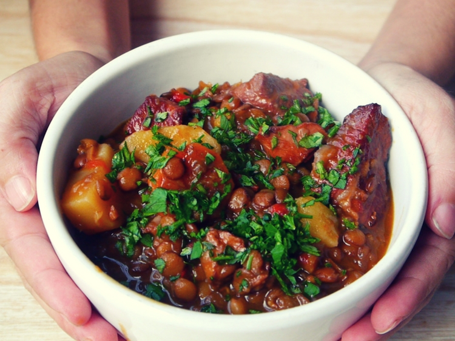

Guiso de lentejas

Ingredientes
- chorizo colorado
- panceta ahumada
- roast beef u otra carne
- cebolla
- ajo
- morron
- papa
- zanahoria
- tomate
- lentejas
- sal
- pimienta
- ajo en polvo
- pure de tomate
- pimenton
- aceite
- oregano
- perejil
Preparación
- Cortar el chorizo y hervir por 15 minutos
- Cortar la panceta en pedacitos pequeños y la carne en cubos mas grandes
- Picar la cebolla y ajo finamente
- Cortar el tomate
- Colocar en una olla antiadherente y a fuego fuerte los trocitos de panceta
- Cuando la panceta está tostada le agregamos el chorizo colorado previamente escurrido
- Añadir la carne y dorar de la misma forma que doramos la panceta
- Agregar la cebolla, el morrón y el ajo. Añadí un poquito de sal para que las verduras larguen su agua y queden bien tiernas
- Sumar el tomate a la olla y cociná hasta hasta que éste cambie de color a un rojo más intenso
- Añadir todas las carnes (chorizo, panceta, y roast beef) y también un chorro de vino
- Agregar las papas y las zanahorias mientras revolvemos. Condimentamos con sal, pimienta, ajo en polvo, pimentón, y una pizca de orégano
- Ahora vamos a completar con las lentejas y con el agua calentita
- Una vez que estén las lentejas cocidas esperamos que se termine de evaporar el agua y lo dejamos reposar.
Volver a pagina principal